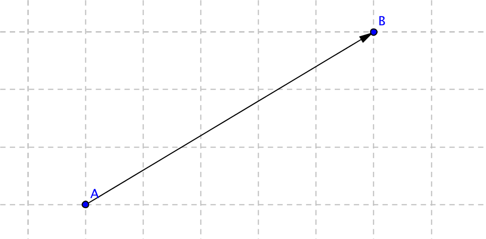
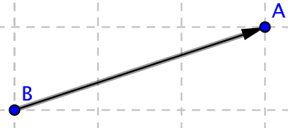
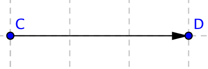
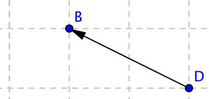
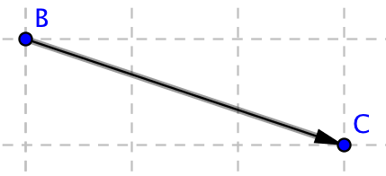
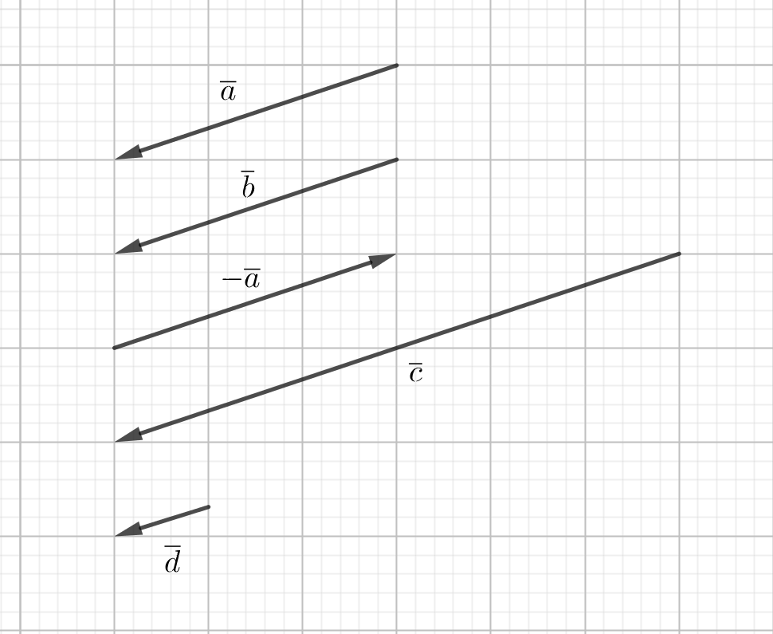
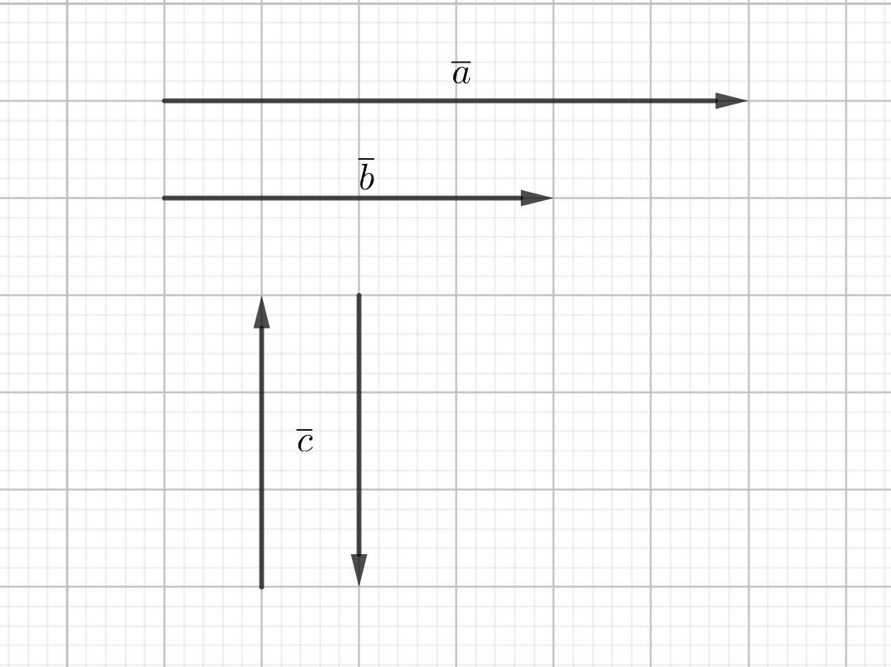
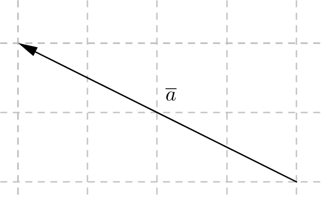
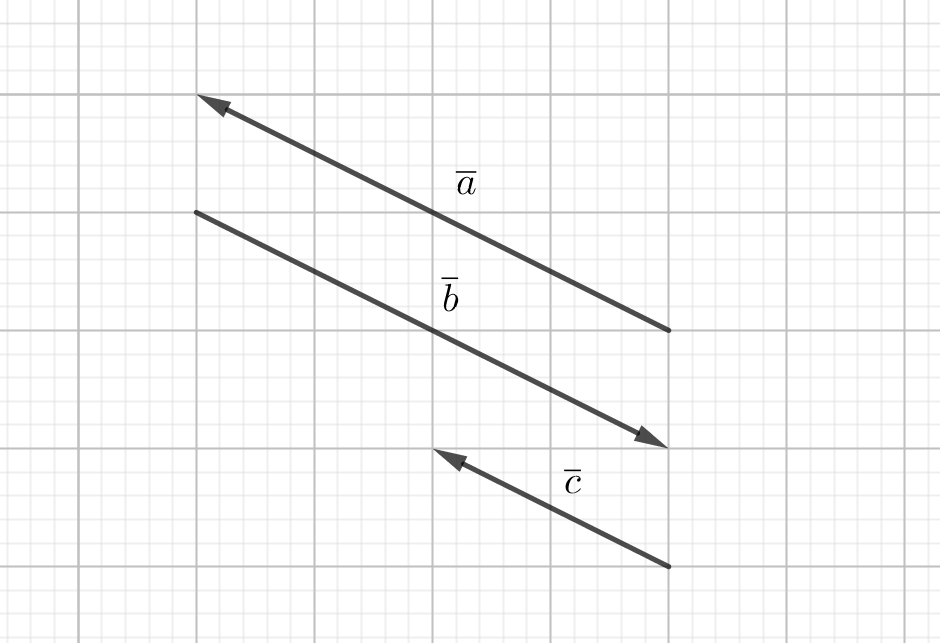

1. Vektorer
En vektor är en matematisk storhet som har både storlek och riktning. Vektorer utnyttjas främst inom fysiken för att beskriva tex kraft, hastighet, acceleration och elektriska- och magnetfält.
Vektorer introduceras för att det gör den matematiska behandlingen lättare av händelser inom fysiken.
Vektorer kan betecknas på flera olika sätt. Vi har
| fet stil | a |
| pilnotation | \( \overrightarrow{AB} \) |
| linjenotation | \( \overline{a} \). |
Det är en liten skillnad på dessa tre och för att inte ha problem i fortsättningen är det bra att genast lära sig skillnaden mellan dessa.
Fet stil används främst inom fysiken och i den angloamerikanska värden.
Pilnotation används för att berätta om en vektor som är mellan två punkter. Vektorn mellan A och B betecknas \( \overrightarrow{AB} \).

Representerar \( \overrightarrow{BA} \) samma som \( \overrightarrow{AB} \)?
Lösning
Nej, eftersom en vektor har storlek och riktning. \( \overrightarrow{AB} \) och \( \overrightarrow{BA} \) har samma storlek, längd, men inte samma riktning. Vi talar om att \( \overrightarrow{AB} \) och \( \overrightarrow{BA} \) är varandras motsatta vektorer. Tänk dessa som motsatta tal. Om vektorn \( \overrightarrow{AB} \) representeras av vektorn \( \overline{a} \), representeras \( \overrightarrow{BA} \) av \( -\overline{a} \).
Mera om dessa kommer i Ett reellt tal gånger en vektor.

Dessa vektorer är olika riktade och det betecknas \( \overrightarrow{AB} \uparrow \downarrow \overrightarrow{CD} \). Du märker att de har samma "lutning".
Vektorerna \( \overrightarrow{AB} \) och \( \overrightarrow{EF} \) är olika långa men de har samma riktning. Vi talar om att de är lika riktade och vi betecknar det som \( \overrightarrow{AB} \uparrow \uparrow \overrightarrow{EF} \).

För att två vektorer skall vara identiska skall de ha samma längd och riktning. Vektorerna \( \overrightarrow{EF} \) och \( \overrightarrow{GH} \) har samma längd och riktning.

När två vektorer kan representeras av en vektor brukar vi beteckna det med en linjenotation. Vi kan alltså skriva \( \overrightarrow{EF}=\overrightarrow{DH}=\overline{a} \) (eller någon annan lämplig bokstav).
En vektor som saknar längd kallar vi för en nollvektor. En nollvektor betecknas \( \overline{0} \). En nollvektor kan vi även skriva som \( \overrightarrow{AA} \), som betyder att den representerar en punkt.
Längden av en vektor betecknas \( \mid \overline{a} \mid \). För nollvektorn betyder det att \( \mid \overline{0} \mid =0 \).
Uppgifter
Kombinera rätt sätt att skriva vektorn med rätt bild.
Välj bland följande beteckningar:
\( \overline{b} \)\( \overrightarrow{AA} \)\( \overrightarrow{DB} \)\( \overline{a} \)\( \overrightarrow{BC} \)\( \overrightarrow{BA} \)\( \overrightarrow{CD} \)\( \overrightarrow{AB} \)Beteckning Bilden 
 
  

 Beteckning Bilden \( \overrightarrow{AB} \) \( \overrightarrow{BA} \) \( \overline{a} \) \( \overrightarrow{CD} \) \( \overrightarrow{DB} \) \( \overline{b} \) \( \overrightarrow{AA} \) \( \overrightarrow{BC} \) - Fyll i de ord som saknas.
En vektor har både längd och [första ordet].
En vektor som saknar längd kallas för [andra ordet].
[Tredje ordet] av vektorn \( \overline{a} \) beteckans \( \mid \overline{a} \mid \) .
Två vektorer som är lika [fjärde ordet] och samma riktade är identiska.
En vektor har både längd och [riktning].
En vektor som saknar längd kallas för [nollvektor eller punkt].
[Längden] av vektorn \( \overline{a} \) betecknas \( \mid \overline{a} \mid \) .
Två vektorer som är lika [långa] och samma riktade är identiska.
Rita av vektorn \( \overline{a} \) på rutpapper.
- Rita vektorn \( \overline{b} \) så att \( \overline{a}=\overline{b} \) .
- Rita vektorn \( -\overline{a} \) .
- Rita vektorn \( \overline{c} \) så att \( \mid \overline{c} \mid = 2\mid \overline{a} \mid \) .
- Rita vektorn \( \overline{d} \) så att \( \overline{a} \uparrow \downarrow \overline{d} \) och \( \mid \overline{a} \mid = 3\mid \overline{d} \mid \) .
Något i stil med

- Låt \( A =(-2,1) \) , \( B=(1,3) \) och \( C=(2,-2) \) . Bestäm \( D \) :s koordinater
- \( \overrightarrow{AB}=\overrightarrow{CD} \)
\( D = (5,0) \)
- \( \overrightarrow{DC}=\overrightarrow{AB} \)
\( D = (-1,-4) \)
- \( \overrightarrow{BD}=-\overrightarrow{AC} \)
\( D = (-3,6) \)
- \( \overrightarrow{DB} = -\overrightarrow{AC} \)
\( D = (5,0) \)
- \( \overrightarrow{AB}=\overrightarrow{CD} \)
Längden för vektorn \( \overline{a} \) är 6 l.e. Rita
- vektorn \( \overline{b} \) som är olika riktad \( \overline{a} \) och \( \mid\overline{b}\mid=4 \) .
- alla lika riktade vektorer till \( \overline{a} \) vars längd är 1.
- alla vekorer som är vinkelräta mot \( \overline{a} \) och vars längd är 3.
Om vi låter \( \overline{a} \) vara vinkelrät så får vi något i stil med

Om vektorerna \( \overline{a} \) , \( \overline{b} \) och \( \overline{c} \) vet vi att \( \overline{a}=-\overline{b} \) och att \( \mid\overline{a}\mid=2\mid \overline{c} \mid \) . På bilden finns vektorn \( \overline{a} \) . Rita vektorerna \( \overline{b} \) och \( \overline{c} \) .

Något i stil med

Betsäm slutkoordinaten då vi startar från punkten \( (2,3) \) och förflyttar oss

- längs med \( \overline{a} \) . Slutpunkten är...
Slutpunkten är \( (4,2) \)
- först längs med \( \overline{a} \) och sedan längs med \( \overline{b} \) .
Vi kommer till \( (7,3) \).
- först längs med \( \overline{b} \) och sedan längs med \( \overline{a} \) .
Slutpunkten är \( (7,3) \).
- längs vektorn - \( \overline{b} \) .
Slutpunkten är \( (-1,2) \).
- först längs med \( -\overline{a} \) och sedan längs med \( -\overline{b} \)
Slutpunkten är\( (-3,3) \).
- längs med \( \overline{a} \) . Slutpunkten är...